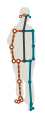
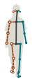
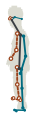
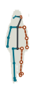

Scoliosis5K
A multimodal gait dataset for scoliosis screening. Each corridor walk pairs RGB video with a silhouette and 25 pose landmarks, frame by frame.
 Front
Front Left
Left Rear
Rear- Recordings
- 4,998
- Participants
- 3,010
- Collection sites
- 9
Walking views
Each view shows a different participant at two moments six frames apart. The RGB crop, silhouette and 25-point pose come from the same frame.
RGB

Silhouette
2D pose


RGB

Silhouette
2D pose

RGB

Silhouette
2D pose

Dataset Overview & Protocol
Clinical and school sites recorded adolescents and young adults walking along standardized corridors. Scoliosis5K follows the Scoliosis1K protocol in a separate nine-site cohort. Each walk has 300 stored frame positions. A recording identifier and frame index link each privacy-processed RGB foreground frame to a 64 × 64 silhouette and 25 pose landmarks with confidence scores.
Rehabilitation specialists assigned a screening label at each visit across three categories: negative, neutral (borderline asymmetry), and positive (referral for radiographic assessment). The official split groups recordings strictly by participant, with 3,999 recordings for training and 999 for testing.
Participant characteristics and screening labels breakdown
| Characteristic | Overall | Negative | Neutral | Positive |
|---|---|---|---|---|
| Full collection recordings | 4,998 | 1,666 | 1,666 | 1,666 |
| Full collection participants† | 3,010 | 1,639 | 882 | 485 |
| Sex (female / male) | 1,644 / 1,366 | 854 / 785 | 465 / 417 | 322 / 163 |
| Age (years) | 14.82 ± 2.40 | 15.02 ± 1.94 | 14.51 ± 1.99 | 14.72 ± 3.95 |
| Height (cm) | 160.56 ± 10.64 | 161.32 ± 10.71 | 160.25 ± 10.77 | 158.58 ± 9.89 |
| Weight (kg) | 48.73 ± 12.10 | 50.48 ± 12.50 | 47.58 ± 11.94 | 44.90 ± 9.67 |
| Body mass index (kg/m²) | 18.65 ± 3.13 | 19.16 ± 3.36 | 18.21 ± 2.73 | 17.69 ± 2.60 |
| Study subset (recordings / participants) | 1,628 / 988 | 548 / 537 | 550 / 289 | 530 / 162 |
† The overall column counts each participant once. Four participants had recordings in more than one category and are omitted from the category-specific participant counts. Measurements are means ± sample SD, using the first recorded measurement per participant. Age was recorded for 3,000 people, height and BMI for 3,008, and weight for 3,010.
Request Dataset Access
Researchers can apply for two encrypted archives: privacy-processed RGB frames, and paired silhouettes and 25-point poses. The data custodian reviews each request and authorizes secure access for approved research projects.
-
Sign the agreement
Complete the form with your academic affiliation, project title, and planned use, then sign the data access agreement.
-
Email your request
Send the signed agreement form, a brief research description, and your Google account email to 21051291r@connect.polyu.hk.
-
Open the approved files
After approval, the custodian sends a private folder link, grants permission to your Google account, and provides the archive password. Mention study fold assignments in your request if needed.
Associated Publication & Code
Scoliosis5K: Multimodal Gait Analysis via Clip-Conditioned RGB-Silhouette Fusion
Author affiliations
- Zizhao Peng, Zihan Wang and Ping Li — Department of Computing, The Hong Kong Polytechnic University
- Zheng Lv — Department of Rehabilitation, Longgang District Central Hospital of Shenzhen
- Yan Wang — Rehabilitation Medicine Center, The Affiliated Taian City Central Hospital of Qingdao University
- Fengwei An — School of Microelectronics, Southern University of Science and Technology
Corresponding authors: Ping Li and Fengwei An.
Participant-Level Evaluation
The study evaluated models on 1,628 recordings from 988 participants in the training partition with all walks from a given participant in the same fold.
Across five folds and three training seeds, the model achieved 83.84% accuracy and 79.94% macro-F1, while the official test partition remained held out. Reported model scores use study-retained RGB; the public RGB archive uses privacy-processed foreground frames.